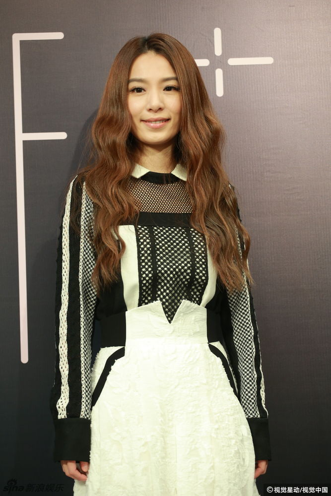

歌手百科
|
田馥甄，1983 年 3 月 30 日出生于台湾新竹县，中国女歌手、演员，华语女子演唱组合 S.H.E 成员之一。[1]2000 年参加《宇宙 2000 实力美少女争霸战》入选。2001 年以 S.H.E 团体出道。2010 年 9 月推出个人首张音乐专辑《To Hebe》。2011 年 9 月发行了第二张音乐专辑《My Love》，该专辑入围第 23 届金曲奖最佳国语专辑及最佳国语女歌手等提名，亦成为金曲奖入围最多项目的专辑之一。2013 年 11 月 29 日发行了第三张音乐专辑《渺小》。2015 年开启名为 “如果” 的巡回演唱会；7 月 10 日，发布单曲《小幸运》。2016 年 7 月 13 日，发行第四张个人专辑《日常》；11 月 4 日，在浙江卫视推出的音乐类节目《梦想的声音》中担任导师。2017 年 12 月 31 日，田馥甄参加 2017-2018 湖南卫视跨年演唱会。2018 年 4 月 19 日，为电视剧《温暖的弦》演唱的主题曲宣传片《最暖的忧伤》发布。
歌手图片

|
|

|